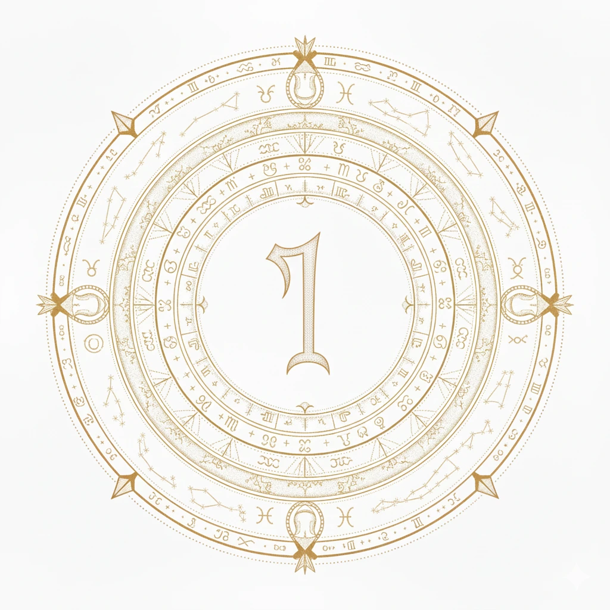

Welcome to Hermes Astrology
In mythology, Hermes was the divine messenger—the guide between worlds, the interpreter of symbols, and the patron of travelers. In astrology, we each carry this Hermetic potential: to navigate the celestial landscape, decode our cosmic blueprint, and find meaning in the stars.
This website is dedicated to that journey. Here, astrology is not just prediction—it is a language of the soul, a map of psychological patterns, and a mirror for self-understanding.
Like Hermes with his caduceus, we seek to integrate opposites—light and shadow, fate and free will, the personal and the transpersonal. The planets and houses become arenas of dialogue between your conscious self and the greater cosmic story.
Whether you are new to astrology or deepening your practice, may this space serve as a waystation for reflection, insight, and connection to the timeless patterns that shape our lives.
"As above, so below. As within, so without."
Begin your journey:
Explore planetary placements, house meanings, and mythic insights in our article library.